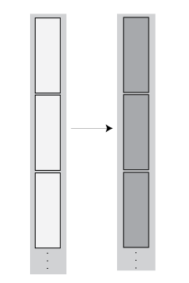
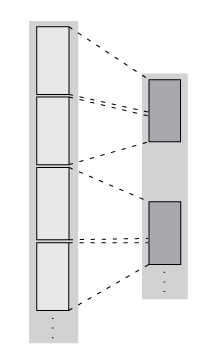
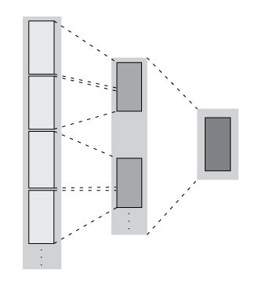
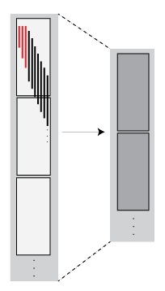

Develop Custom Tall Array Algorithms
Tall arrays are a powerful, intuitive way to work with large data sets using traditional MATLAB® syntax. However, since tall arrays operate on blocks of the data, each of which individually fits into memory, the traditional algorithms of most functions need to be updated to use a parallelized approach to support tall arrays. This topic shows you how to develop your own parallelized algorithms to operate on tall arrays.
Currently available approaches for applying custom functions to tall arrays are:
Single-Step Transformation Operation: Apply a function to the blocks of data in a tall array.
Two-Step Reduction Operation: Apply a function to a tall array to transform the contents, and then apply another function to reduce the output to a single block.
Sliding-Window Operations: Apply a moving-window function to a tall array to transform the contents.
Regardless of which operation you choose, there are options, performance considerations, and common issues that apply to all approaches.
Reasons to Implement Custom Algorithms
Most common mathematical functions and MATLAB operations already support tall arrays. If the functionality is already supported, then writing your own algorithm might not be necessary.
Here are some reasons why you might want to implement a custom algorithm for tall arrays:
Implement Currently Unsupported Functions — If a particular function does not currently support tall arrays, then you can use the APIs outlined here to write a version of that function that supports tall arrays.
Leverage Existing Code — If you have existing code that performs some operations on in-memory data, then with only minor modifications you can make it compatible to operate on tall arrays. This approach avoids the need to convert the code to fit the subset of the MATLAB language that supports tall arrays.
Gain Performance — For example, you can rewrite a MATLAB function as a C++ MEX function, and then you can use the APIs outlined here to call the MEX function to operate on the data.
Use a Preferred External Library — For compatibility within your organization it is sometimes required to use a specific external library for certain calculations. You can use the APIs outlined here to reimplement a function with those external libraries.
Supported APIs
The supported APIs are intended for advanced use and do not include extensive input checking. Expect to spend some time testing that the supplemental functions you implement satisfy all of the requirements and perform the calculations you expect. Currently supported APIs for authoring tall array algorithms are listed here.
| Name | Description |
|---|---|
matlab.tall.transform | Apply a specified function to each block of one or more tall arrays. |
matlab.tall.reduce | Apply a specified function to each block of one or more tall arrays. Then feed the output of that function into a second reduction function. |
matlab.tall.movingWindow | Apply moving window function to blocks of data. |
matlab.tall.blockMovingWindow | Apply moving window function and block reduction to padded blocks of data. |
Background: Tall Array Blocks
When you create a tall array from a datastore, the underlying datastore
facilitates the movement of data during a calculation. The data moves in discrete pieces
called blocks, where each block is a set of consecutive rows that can
fit in memory. For example, one block of a 2-D array (such as a table) is
X(n:m,:). The size of each block is based on the value of the
ReadSize property of the datastore, but the block is not always that
exact size. For the purposes of developing tall array algorithms, a tall array is considered
to be the vertical concatenation of many such blocks.

The blocks of a given array are chosen at run-time based on available memory, so they can be dynamic. Therefore, the blocks might not be exactly the same size between runs. If you have changes on your computer that affect the available memory, then that can impact the size of the blocks.
Although this page refers only to blocks and
rows in a 2-D sense, these concepts extend to N-D tall arrays. The
block size is only constrained in the first dimension, so the block includes all elements in
other dimensions; for example, X(n:m,:,:,...). Also, rather than rows,
N-D arrays have slices such as X(p,:,:,...).
Single-Step Transformation Operation
The matlab.tall.transform function applies a single function to
each block of a tall array, so you can use it to apply a block-wise transformation,
filtering, or reduction of the data. For example, you can remove rows with specific values,
center and scale the data, or detect certain conditions and transform specific pieces of
data. These figures show what happens to the blocks in an array when they are operated on by
matlab.tall.transform.
Operation | Description | Examples |
|---|---|---|

| Transformation — The number of rows in each block remains the same, but the values change. |
|

| Filtering — The number of rows in each block are reduced, so the blocks in the new array might include rows originally present in other blocks. |
|
Transform Syntax
The generic syntax to apply a single-step transform is
[tA, tB, tC, ...] = matlab.tall.transform(fcn, tX, tY, tZ, ...)
Functional Requirements for fcn
The general functional signature of fcn is
[a, b, c, ...] = fcn(x, y, z, ...)
fcn must satisfy these requirements:
Input Arguments — The inputs
[x, y, z, ...]are blocks of data that fit in memory. The blocks are produced by extracting data from the respective tall array inputs[tX, tY, tZ, ...]. The inputs[x, y, z, ...]satisfy these properties:All of
[x, y, z, ...]have the same size in the first dimension after any allowed expansion.The blocks of data in
[x, y, z, ...]come from the same index in the tall dimension, assuming the tall array is nonsingleton in the tall dimension. For example, iftXandtYare nonsingleton in the tall dimension, then the first set of blocks might bex = tX(1:20000,:)andy = tY(1:20000,:).If the first dimension of any of
[tX, tY, tZ, ...]has a size of1, then the corresponding block[x, y, z, ...]consists of all the data in that tall array.
Output Arguments — The outputs
[a, b, c, ...]are blocks that fit in memory, to be sent to the respective outputs[tA, tB, tC, ...]. The outputs[a, b, c, ...]satisfy these properties:All of
[a, b, c, ...]must have the same size in the first dimension.All of
[a, b, c, ...]are vertically concatenated with the respective results of previous calls tofcn.All of
[a, b, c, ...]are sent to the same index in the first dimension in their respective destination output arrays.
Functional Rules —
fcnmust satisfy the functional rule:F([inputs1; inputs2]) == [F(inputs1); F(inputs2)]: Applying the function to the concatenation of the inputs should be the same as applying the function to the inputs separately and then concatenating the results.
Empty Inputs — Ensure that
fcncan handle an input that has a height of 0. Empty inputs can occur when a file is empty or if you have done a lot of filtering on the data.
Two-Step Reduction Operation
matlab.tall.reduce applies two functions to a tall array, with the
result of the first step being fed in as input to a final reduction step. The reduction
function is applied repeatedly to the intermediate results until a single final block that
fits in memory is obtained. In the MapReduce paradigm, this process is similar to a "single
key" MapReduce operation, where the intermediate results all have the same key and are
combined in the reduction step.
The first step is similar to matlab.tall.transform and has the same
requirements. However, the reduction step always reduces the intermediate results down to a
single block that fits in memory. These figures show what happens to the blocks in an array
when they are operated on by matlab.tall.reduce.
Operation | Description | Examples |
|---|---|---|
| Transformation + Reduction — The number of rows in each block remains the same after the first step, and then the intermediate results are reduced to one block. |
|

| Filtering + Reduction — The number of rows in each block are reduced in the first step. Then the intermediate results are reduced to one block. |
|

Reduce Syntax
The generic syntax to apply a two-step reduction is
[rA, rB, rC, ...] = matlab.tall.reduce(fcn, reducefcn, tX, tY, tZ, ...)
The functional signature of fcn is
[a, b, c, ...] = fcn(x, y, z, ...)
The functional signature of reducefcn is
[rA, rB, rC, ...] = reducefcn(a, b, c, ...)
That is, the input tall arrays [tX, tY, tZ, ...] are broken into
blocks [x, y, z, ...] that are inputs to fcn. Then,
fcn returns outputs [a, b, c, ...] that are inputs
to reducefcn. Finally, reducefcn returns the final
results [rA, rB, rC] that are returned by
matlab.tall.reduce.
Functional Requirements for reducefcn
The requirements for fcn are the same as those that were outlined
in Functional Requirements for fcn. However, the
requirements for reducefcn are different.
The general functional signature of reducefcn is
[rA, rB, rC, ...] = reducefcn(a, b, c, ...)
reducefcn must satisfy these requirements:
Input Arguments — The inputs
[a, b, c, ...]are blocks that fit in memory. The blocks of data are either outputs returned byfcn, or a partially reduced output fromreducefcnthat is being operated on again for further reduction. The inputs[a, b, c, ...]satisfy these properties:The inputs
[a, b, c, ...]have the same size in the first dimension.For a given index in the first dimension, every row of the blocks of data
[a, b, c, ...]either originates from the input, or originates from the same previous call toreducefcn.For a given index in the first dimension, every row of the inputs
[a, b, c, ...]for that index originates from the same index in the first dimension.
Output Arguments — All outputs
[rA, rB, rC, ...]must have the same size in the first dimension. Additionally, they must be vertically concatenable with the respective inputs[a, b, c, ...]to allow for repeated reductions when necessary.Functional Rules —
reducefcnmust satisfy these functional rules (up to roundoff error):F(input) == F(F(input)): Applying the function repeatedly to the same inputs should not change the result.F([input1; input2]) == F([input2; input1]): The result should not depend on the order of concatenation.F([input1; input2]) == F([F(input1); F(input2)]): Applying the function once to the concatenation of some intermediate results should be the same as applying it separately, concatenating, and applying it again.
Empty Inputs — Ensure that
reducefcncan handle an input that has a height of 0. Empty inputs can occur when a file is empty or if you have done a lot of filtering on the data. For this call, all input blocks are empty arrays of the correct type and size in dimensions beyond the first.
Sliding-Window Operations
The matlab.tall.movingWindow and
matlab.tall.blockMovingWindow functions apply a function to windows
of data within a tall array. While matlab.tall.transform and
matlab.tall.reduce operate on entire blocks of data at a time, the
moving-window functions operate on windows of data as a window moves from the beginning to
the end of the array. The windows can span between the blocks of data being read from
disk.
These figures show what happens to the blocks in an array when they are operated on by
matlab.tall.movingWindow or
matlab.tall.blockMovingWindow.
| Operation | Description | Examples |
|---|---|---|
|
| Windowed Transformation — The number of rows in each block remains the same, but the values change. The output contains the results of operations performed on both incomplete and complete windows of data. Both |
|
|
 | Windowed Filtering — Incomplete windows of data are discarded, so the output has fewer elements than the input. The output only contains the results of operations performed on complete windows of data. Both |
|

You can use matlab.tall.movingWindow and
matlab.tall.blockMovingWindow to apply windowed transformations or
filters to data. For example, you can calculate a trailing average or a moving median, or
you can apply several operations at once to the same window. The two functions differ in
these ways:
matlab.tall.movingWindowappliesfcnto all windows of data, regardless of whether the windows are complete.matlab.tall.blockMovingWindowapplieswindowfcnto incomplete windows of data, and appliesblockfcnto complete windows of data.matlab.tall.movingWindowoperates on single windows of data at a time.matlab.tall.blockMovingWindowoperates on entire blocks of data containing multiple complete windows, which reduces the number of function calls required in the calculation.
Moving Window Syntaxes
The syntax to apply a moving window operation to single windows of data is
[tA, tB, tC, ...] = matlab.tall.movingWindow(fcn, window, tX, tY, tZ, ...)
The functional signature of fcn must be
[a, b, c, ...] = fcn(x, y, z, ...)
Similarly, the syntax to apply a moving window operation to entire blocks of data is
[tA, tB, tC, ...] = matlab.tall.blockMovingWindow(windowfcn, blockfcn, window, tX, tY, tZ, ...)
The functional signatures of windowfcn and
blockfcn must be
[a, b, c, ...] = windowfcn(info, x, y, z, ...) [a, b, c, ...] = blockfcn(info, bX, bY, bZ, ...)
The info input is a structure that contains the fields
Window and Stride. When you write the function.
use these fields to pick out windows of data in each block.
For an outline of general rules that fcn,
windowfcn, and blockfcn must follow, see Functional Requirements for fcn. Aside from the
info input, fcn and windowfcn
have the same requirements. However, the requirements for blockfcn are
different since that function operates on entire blocks of data.
Functional Requirements for windowfcn
The general functional signature of
windowfcn
is
[a, b, c, ...] = windowfcn(info, x, y, ...)
info input is a structure provided by
matlab.tall.blockMovingWindow that includes these fields:
Stride— Specified step size between windows (default: 1). Set this value with the'Stride'name-value pair.Window— Specified window size. Set this value with thewindowinput argument.
windowfcn must satisfy these requirements:
Input Arguments — The inputs
[x, y, z, ...]are blocks of data that fit in memory. The blocks are produced by extracting data from the respective tall array inputs[tX, tY, tZ, ...]. The inputs[x, y, z, ...]satisfy these properties:All of the inputs
[x, y, z, ...]have the same size in the first dimension.The blocks of data in
[x, y, z, ...]come from the same index in the tall dimension, assuming the tall array is nonsingleton in the tall dimension. For example, iftXandtYare nonsingleton in the tall dimension, then the first set of blocks might bex = tX(1:20000,:)andy = tY(1:20000,:).When the first dimension of any of
[tX, tY, tZ, ...]has a size of1, the corresponding block[x, y, z, ...]consists of all the data in that tall array.Applying
windowfcnmust result in a reduction of the input data to a scalar or a slice of an array of height 1.When the input is a matrix, N-D array, table, or timetable, applying
windowfcnmust result in a reduction of the input data in each of its columns or variables.
Output Arguments — The outputs
[a, b, c, ...]are blocks that fit in memory to be sent to the respective outputs[tA, tB, tC, ...]. The outputs[a, b, c, ...]satisfy these properties:All of the outputs
[a, b, c, ...]must have the same size in the first dimension.All of the outputs
[a, b, c, ...]are vertically concatenated with the respective results of previous calls towindowfcn.All of the outputs
[a, b, c, ...]are sent to the same index in the first dimension in their respective destination output arrays.
Functional Rules —
windowfcnmust satisfy this functional rule:F([inputs1; inputs2]) == [F(inputs1); F(inputs2)]: Applying the function to the concatenation of the inputs should be the same as applying the function to the inputs separately and then concatenating the results.
Functional Requirements for blockfcn
The general functional signature of blockfcn
is
[a, b, c, ...] = blockfcn(info, bX, bY, bZ, ...)
info input is a structure provided by
matlab.tall.blockMovingWindow that includes these fields:
Stride— Specified step size between windows (default: 1). Set this value with the'Stride'name-value pair.Window— Specified window size. Set this value with thewindowinput argument.
The blocks of data bX, bY, bZ, ... that
matlab.tall.blockMovingWindow provides to blockfcn
have these properties:
The blocks contain only full-sized windows.
blockfcndoes not have to define a behavior for incomplete windows of data.The first window of data starts at the first element of the block. The last element of the last window is the last element of the block.
blockfcn must satisfy these requirements:
Input Arguments — The inputs
[bX, bY, bZ, ...]are blocks of data that fit in memory. The blocks are produced by extracting data from the respective tall array inputs[tX, tY, tZ, ...]. The inputs[bX, bY, bZ, ...]satisfy these properties:All of the inputs
[bX, bY, bZ, ...]have the same size in the first dimension after any allowed expansion.The blocks of data in
[bX, bY, bZ, ...]come from the same index in the tall dimension, assuming the tall array is nonsingleton in the tall dimension. For example, iftXandtYare nonsingleton in the tall dimension, then the first set of blocks might bebX = tX(1:20000,:)andbY = tY(1:20000,:).If the first dimension of any of the data inputs
[tX, tY, tZ, ...]has a size of1, then the corresponding block[bX, bY, bZ, ...]consists of all the data in that tall array.Applying
blockfcnmust result in a reduction of the input data such that the result has height equal to the number of windows in the block. You can useinfo.Windowandinfo.Strideto determine the number of windows in a block.If the input is a matrix, N-D array, table, or timetable, then applying
blockfcnmust result in a reduction of the input data in each of its columns or variables.
Output Arguments — The outputs
[a, b, c, ...]are blocks that fit in memory, to be sent to the respective outputs[tA, tB, tC, ...]. The outputs[a, b, c, ...]satisfy these properties:All of the outputs
[a, b, c, ...]must have the same size in the first dimension.All of the outputs
[a, b, c, ...]are vertically concatenated with the respective results of previous calls toblockfcn.All of the outputs
[a, b, c, ...]are sent to the same index in the first dimension in their respective destination output arrays.
Functional Rules —
blockfcnmust satisfy this functional rule:F([inputs1; inputs2]) == [F(inputs1); F(inputs2)]: Applying the function to the concatenation of the inputs should be the same as applying the function to the inputs separately and then concatenating the results.
Control Output Data Type
If the final output from any of the Supported APIs has a different data
type from the input, then you must specify the
'OutputsLike' name-value pair to provide one or more prototype arrays
that have the same data type and attributes as the corresponding outputs. The value of
'OutputsLike' is always a cell array, with each cell containing a
prototype array for the corresponding output argument.
For example, this call to matlab.tall.transform accepts one tall
array tX as an input and returns two outputs with different types
specified by the prototype arrays protoA and protoB.
Output A has the same data type and attributes as
protoA, and likewise for B and
protoB.
C = {protoA protoB};
[A, B] = matlab.tall.transform(fcn, tX, 'OutputsLike', C)A common way to supply the prototype arrays is to call fcn with
trivial inputs of the proper data type, since the outputs returned by fcn
have the correct data type. In this example, the transform function accepts a tall double,
but returns a tall table. A prototype array is generated by calling
fcn(0) and the prototype is specified as the value of
'OutputsLike'.
ds = tabularTextDatastore('airlinesmall.csv','TreatAsMissing','NA');
ds.SelectedVariableNames = {'ArrDelay', 'DepDelay'};
tt = tall(ds);
tX = tt.ArrDelay;
fcn = @(x) table(x,'VariableNames',{'MyVar'});
proto_A = fcn(0);
A = matlab.tall.transform(fcn,tX,'OutputsLike',{proto_A});Coding and Performance Tips
Put all analytics in a single function that you call to operate directly on the data, instead of using unnecessary nested functions.
Experiment using a small subset of the data. Profile your code to find and fix bottlenecks before scaling up to the entire data set, where bottlenecks can be greatly amplified.
Pay attention to the orientation of your data, since some functions return the outputs in different shapes depending on the input data. For example,
uniquecan return either a row vector or a column vector depending on the orientation of the input data.Blocks are dynamically generated at run-time based on available computer memory. Make sure that any specified reduction function obeys the function rule
F([input1; input2]) == F([F(input1); F(input2)]). If this rule is not obeyed, then the results can differ significantly between trials.Blocks can have any size in the first dimension, including 0 or 1. Size 0 or 1 can occur in intermediate calculations as a result of filtering or reduction operations. Make sure your function does the correct thing for both of these cases. One sign that the function does not handle these cases properly is when you receive an "Output is different size" error message.
See Also
matlab.tall.reduce | matlab.tall.transform | matlab.tall.movingWindow | matlab.tall.blockMovingWindow